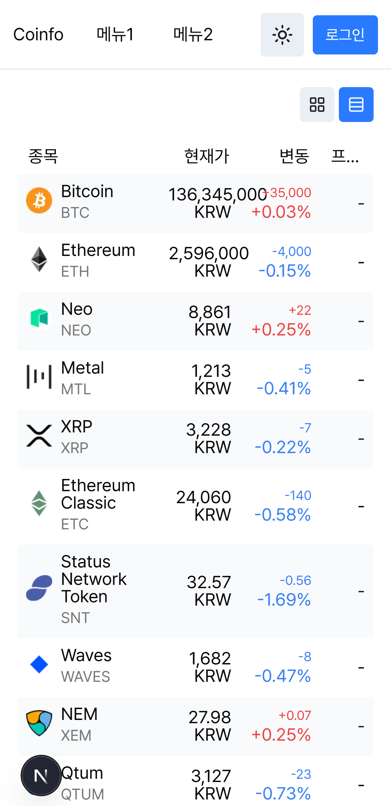
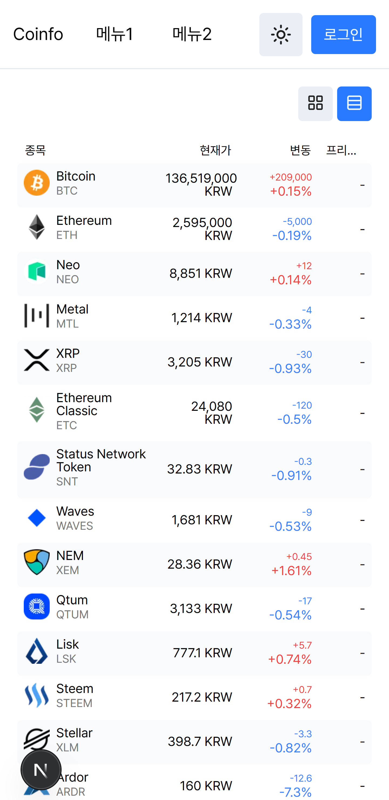

Coinfo - 프로젝트 소개
기술 스택
프로젝트 기간
구현 기능
실시간 시세
여러 암호화폐 거래소의 WebSocket API를 활용하여 실시간 시세를 보여줍니다.
- TPS 1000을 넘는 경우가 발생하기 때문에, 성능 부하를 최대한 줄이며 렌더링 하는 방법을 고안했습니다.
- 어댑터 패턴을 활용하여 새로운 거래소 API 연동이 용이하도록 구현했습니다.
- 일부 API의 연결이 지연되거나 오류가 발생해도 정상 작동하도록 구현했습니다.
디자인 시스템
- 디자인 토큰 기반으로 설계하였습니다.
useOverlay hook 구현
- Context API를 활용하여 Overlay를 쉽게 구현할 수 있는 커스텀 훅을 제작하였습니다.
- History API를 활용하여, 뒤로가기 시 Overlay를 닫을 수 있습니다. (모바일 UX 고려)
- 해당 hook과 Promise를 활용하여 블로킹이 가능한 Custom Dialog(Alert, Confirm)을 구현했습니다.
트러블슈팅
실시간 시세 렌더링 속도 개선
⚠️ 문제
과도한 시세 업데이트가 발생할 경우, 저사양 환경에서 성능저하가 발생하였습니다.🔍 접근
- 개발자 도구를 통해 분석한 결과 Painting, Rendering 시간이 크게 발생하고 있는 걸 확인✅ 해결
Intersection Observer API를 활용해 Viewport 내에 존재하는 컴포넌트만 업데이트하는 HoC를 구현 후 적용했고,hover 미디어 쿼리 자동 적용 PostCSS 플러그인 구현
⚠️ 문제
- 일부 환경(모바일 등)에서는 hover가 의도한 대로 동작하지 않음✅ 해결
해당 작업을 자동으로 처리해 주는 PostCSS 플러그인을 구현 후 적용하였습니다.Storybook 애드온 구현
⚠️ 문제
- 라이트 모드/다크 모드가 적용된 컴포넌트를 한 번에 확인할 수 없습니다.✅ 해결
한 번에 여러 테마가 적용된 컴포넌트를 보여주고,em을 활용한 컴포넌트 scale 변경
⚠️ 문제
반응형 웹에서 컴포넌트 별로 scale을 다르게 적용해야 하는 상황이 발생했습니다.✅ 해결
- rem을 중심으로 작성했던 스타일을, em 중심으로 변경하였습니다.Before
After
